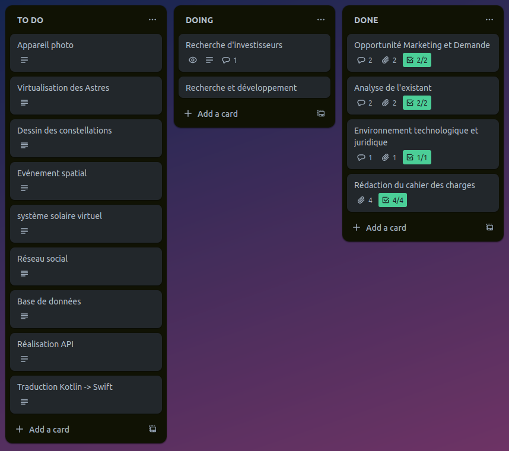

Avec les enseignements dispensés dans le cadre de la ressource "Gestion de projet et des organisations", j'ai pu mobiliser plusieurs compétences essentielles pour la conduite efficace de projets informatiques. Ces compétences incluent notamment la conception d'un projet avec un cahier des charges client, la mise en œuvre de ses différentes phases en assurant une préparation adéquate des ressources humaines et matérielles nécessaires, ainsi que la planification des délais à l'aide d'outils tels que le diagramme de Gantt.
Conduire un projet
Durant cette première année, j'ai eu l'opportunité de participer à plusieurs projets variés, allant des études et l’analyse de ressource à la conception de logiciels À travers ces projets, j'ai appris à appliquer des méthodologies de gestion de projet, à collaborer efficacement au sein d'une équipe, et à utiliser des outils de planification et de suivi pour mener à bien les différentes étapes de chaque projet. La conduite de projet ne se limite pas à la simple exécution des tâches techniques. Elle implique également une gestion rigoureuse des ressources, une communication claire et continue avec les parties prenantes, et une capacité à anticiper et résoudre les problèmes potentiels.
Ressources

Grâce à ces enseignements, j'ai développé une compréhension approfondie des principes de base de la gestion de projet, ce qui m'a permis d'élaborer des plans détaillés pour chaque projet, en identifiant les étapes clés, en estimant les ressources nécessaires et en définissant les échéanciers. La mise en pratique de ces connaissances m'a également permis d'utiliser efficacement des outils de gestion de projet, tels que les diagrammes de Gantt et les to do list, pour suivre et contrôler l'avancement des projets en temps réel.
les enseignements reçus dans le cadre de la ressource "Gestion de projet et des organisations" m'ont fourni une base solide pour mobiliser et développer un ensemble de compétences clés nécessaires à la conduite réussie de projets informatiques. Cependant, la recherche et l'intégration de ressources supplémentaires ont également été essentielles pour affiner mes connaissances et relever les défis rencontrés dans la pratique.
Les différentes ressources utilisé lors de la SAÉ associé sont l’analyse de la demande et de l’existant, l’élaboration d’un cahier des charges client, L’évaluation de besoin en RH, l’évaluation des ressources budgétaires, la planification des tâches et de leurs délais en utilisant la méthode PERT et en l’exportant vers un diagramme de Gantt et la rédaction d’un RGPD.
Implication
Au cour de cette SAÉ j’ai été assigné à plusieurs tâches tel que l’étude marketing et de la demande suivi de la rédaction de notre Environnement juridique et technologique, la participation à la rédaction du cahier des charges, l’analyse fonctionnelle des besoins et la réalisation des détails de la réalisation avec la création du diagramme de gantt.
Avec mon collaborateur nous nous sommes mis sur le même pied d’égalité en communiquant le plus souvent possible en faisant des réunions en présentiel ou à distance pour discuté et relevé les différentes problématiques que nous allons devoir gérer. La collaboration se fût en harmonie notamment en collaborant sur certains points de notre projet.
J’ai eu l’occasion de travail en toute autonomie sur la réalisation des délais de conception, l’écriture de l’environnement juridique et technologique et l’analyse fonctionnelle des besoin chez moi comme à l’université. Lorsque que je rencontrais des difficulté à la réalisation de mes tâches, je faisais mon maximum pour me documenter sur différents support pour comprendre comment résoudre mon affaire.
Apprentissages
Je suis ressorti de cette SAÉ avec une meilleure compréhension de la démarche d'un projet. Cette expérience m'a permis de voir concrètement comment les différentes étapes d'un projet s'emboîtent et interagissent pour atteindre les objectifs fixés. J'ai appris à apprécier l'importance de la planification minutieuse, de la communication efficace et de la gestion rigoureuse des ressources pour assurer le succès d'un projet. De plus, j'ai acquis une perspective plus nuancée sur les défis et les opportunités qui peuvent surgir tout au long du processus, ce qui m'aide à aborder de manière plus confiante et stratégique les projets futurs. En fin de compte, cette SAÉ a été une expérience formatrice qui m'a permis de consolider mes connaissances théoriques en gestion de projet et de les mettre en pratique dans un environnement professionnel réel.
J’ai réalisé que je possédais de point faible qu niveau de l’organisation d’une analyse marketing de la demande. J’avais certaines difficulté pour regroupé des avis de clients constructifs pouvant m’aider dans la réalisation du projet et du marketing. J’ai néanmoins renforcé cette lacune en m’y exerçant lors de la SAÉ en faisant plusieurs recherche sur des site spécialisé regroupant des base de données.
Pour mes futures projets, je compte m'investir encore plus dans l'analyse de la demande et de la concurrence afin de développer mon sens critique et de réévaluer nos stratégies. Je suis convaincu que comprendre profondément les besoins du marché et les forces en présence est essentiel pour élaborer des solutions innovantes et compétitives.